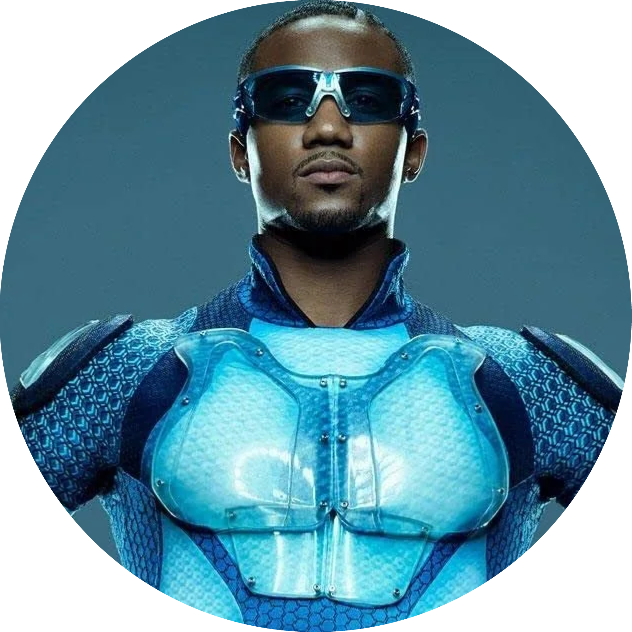
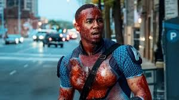
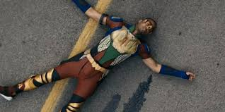
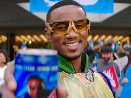
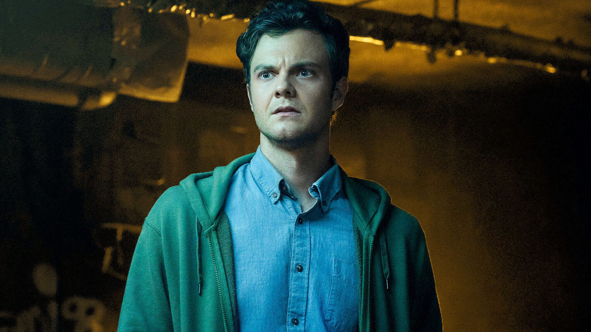
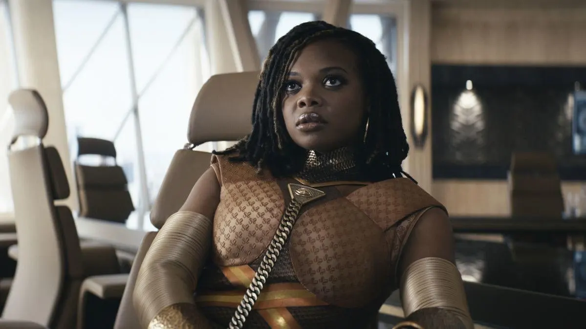
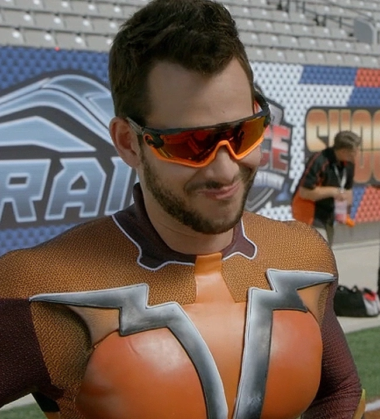
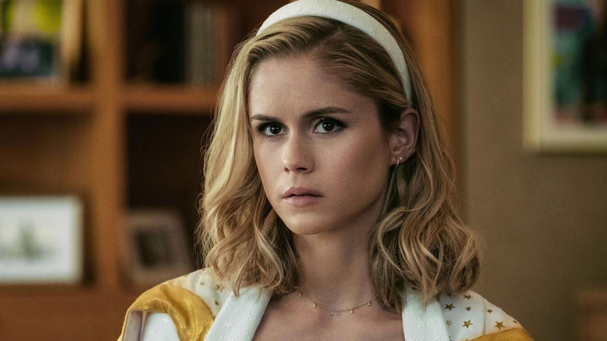
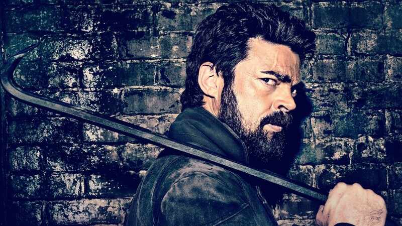

TREM-BALA
NOTICIAS
Trem-Bala explode uma jovem ao correr no Aventureiro-Jlle.

Trem-bala vai parar no hospital depois de usar droga e correr.

Trem-Bala ganha a Corrida-Super contra seu maior rival.

INIMIGOS
Hughie Campbell
Trem-Bala matou sua ex-namorada

Sister Sage
Entrou para os 7 com o objetivo de criar emboscadas para inimigos do Capitão Pátria

Shockwave

ALIADOS
Hughie Campbell
Starlight

Billy Bruto
